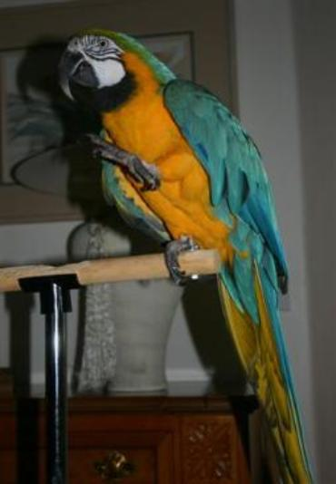
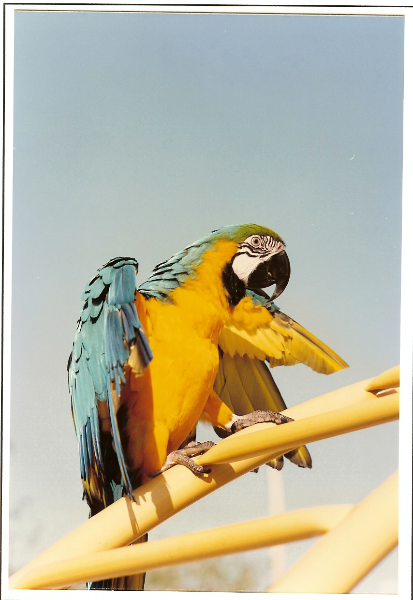
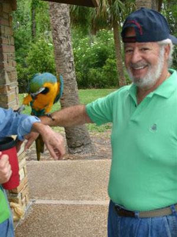
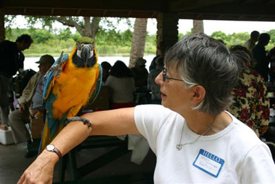
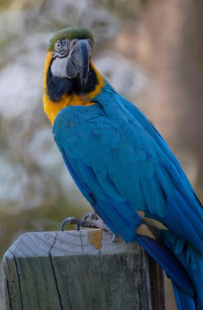
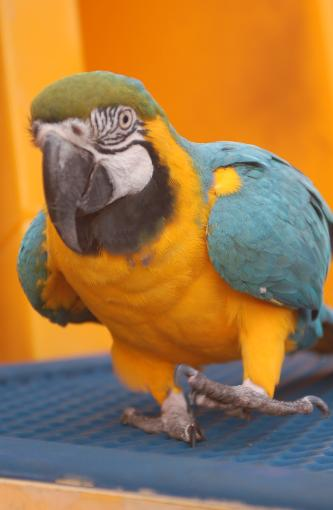
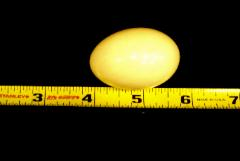

Photo Album

You are here:
Photo Album
Photo Album
Do you think
I'm left footed?
I'm left footed?
Do you want to guess again
whether I'm left footed?
whether I'm left footed?
Arielle transmits a basic message. Her gesture means:
"Please pick me up!"
She makes herself understood. If her message is
misunderstood, or if the response is too slow, she
vocalizes repeatedly until she gets her way. By chanting
"Come up! Come up! Come up!" or "Want up! Want up!
Want up!" she annoys her companion human and
succeeds at obtaining her goal.
"Please pick me up!"
She makes herself understood. If her message is
misunderstood, or if the response is too slow, she
vocalizes repeatedly until she gets her way. By chanting
"Come up! Come up! Come up!" or "Want up! Want up!
Want up!" she annoys her companion human and
succeeds at obtaining her goal.
| Arielle composed the sentiment expressed on her own ... click "play" to hear her words. (Click here if player image is missing.) If, after hearing her speech, you are unsure of what Arielle said, the transcription and explanation appear in a yellow box near the bottom of this page. |

One of Arielle's favorite places
is the playground at a nearby
park. She enjoys climbing up
and down over the ladder
upon which she stands. She
often explores the adjacent
bridge and the climbing towers
too.
She is especially fond of little
children, and she investigates
anyone who might be doing
something interesting near her.
From time to time, Arielle
perches upon a person's arm if
he or she expresses interest in
her. She has made a great
number of friends along our
walks over nineteen years.
is the playground at a nearby
park. She enjoys climbing up
and down over the ladder
upon which she stands. She
often explores the adjacent
bridge and the climbing towers
too.
She is especially fond of little
children, and she investigates
anyone who might be doing
something interesting near her.
From time to time, Arielle
perches upon a person's arm if
he or she expresses interest in
her. She has made a great
number of friends along our
walks over nineteen years.
| Arielle said, "He loves me." Her words are not taught because she is female and because her owner would not refer to her as "he." This an example of a macaw using words in an appropriate fashion. Importantly, she expresses a concept of self when she freely refers to herself as "me." Arielle has a "Theory of Mind;" she is one of the few nonhuman animals exhibiting consciousness through speech. Note than in addition to the other complexities, she has correctly adjusted the verb form to match the subject "he." If one contends that Arielle does not understand what she says, then how does one explain her statement? |
| Arielle understands speech and speaks thoughtfully using English words, phrases, and sentences. |
Photo by Linda Carpenter
© Michael Dalton
| Pictures from PINAWOR (Writers' Picnic) |


| Below are two pictures from the book Another Kind of Mind |



2005
2006
| Arielle's First Egg (January 2012, Arielle ~20+ yrs.) |